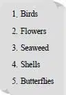
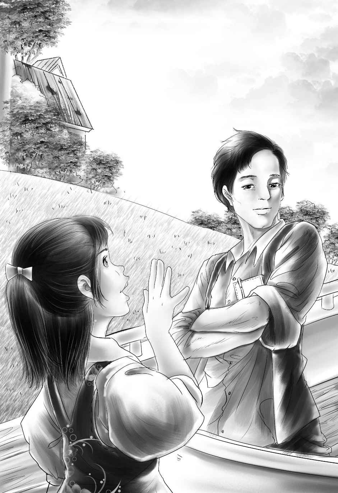

“We must go on exploring the island，”said Henry，the morning after the clam digging．“It may rain any day and the days are just flying by．”
“We can go this morning，”said Jessie，coming to the doorway of the barn．“The clams will not take very long to cook，and that’s all we are going to have for dinner except，of course，bread，butter，and milk．If we get back by eleven o’clock，we shall have plenty of time．”
“It’s settled，then，”said Henry．“Let’s take the big kettle．We might find something we want to bring home．Now where is Benny？”
“There he is，”said Jessie，pointing．
Benny was coming from the dock．He had a basket of groceries with him．
“Hurry up，Benny．We are going to explore，”said Henry，taking the kettle．
“Aren’t we going to cook my clams？”asked Benny．
“Oh，yes．We’ll be back in plenty of time to cook your clams，Benny．”
They started down the beach．
“See this funny shell，”said Jessie．She dug it out with her foot．“It is just like a little boat．Let’s save it．”She dropped it into the kettle．
“And here’s a beautiful one，”said Violet．“Let’s save all the shells we find．”
“Look at this pretty purple flower，Jessie，right in the sand，”said Benny．
“Let’s save all the flowers we find，too，”said Jessie．“Put it in the kettle，Benny．”
Just then Henry began to jump around on the sand．The others watched him in surprise．
“What in the world is the matter with you？”asked Jessie，as Watch began to jump with him．
“I have a great idea！ Oh，boy！”cried Henry．
“Tell us，”said Violet，as they all sat down on the sand．
“Well，”began Henry，“you all know what a museum is——”
“I don’t，”said Benny．
“Oh，sure you do，Benny，”cried Henry．“You must have seen pictures of museums; places where they keep all kinds of birds and animals and flowers．”
“And shells，”said Violet．
“That’s it，”cried Henry，looking at his sister．“You know what my idea is already，don’t you？”
“I think so，”said Violet．“And I think it is a perfectly wonderful idea．”
“Oh，do you？”asked Henry．“I wasn’t sure．”
“What is this idea？”asked Jessie．
“Well，”answered Henry，“we are sure to find some interesting things on this island to keep．We found these things without looking at all．Maybe we shall find lots more——butterflies，birds，seaweed——”
“We could clean out the upstairs in the barn，”said Jessie．
“And have a museum，”said Benny．
“I can’t think of anything I’d rather do！”said Jessie．“That will give us lots of things to do on rainy days．Violet could make little signs for everything，and you could make a table to go around the room．And I will dry the flowers between newspapers and put the shells in boxes．” “We wouldn’t have real birds，would we？”asked Violet，looking worried．
“Oh，no！”cried Henry．“We could cut birds out of heavy paper and color them——every bird we see．”
“Then we could cut down some small trees and put the birds on the branches，”said Jessie．“I’ve seen them in the museum．”
“Good！”said Henry．“We might find old birds’ nests to put up in the trees．We will have plenty of fun this whole summer．”
Violet began to write down in the little book:

“That’s enough for a beginning，”said Henry，standing up．“We shall have to be on the watch every minute．”
And so the exploring party set out once more，looking at the trees for birds，and dropping flowers and shells into the kettle．
“How can I write the names of these shells when we don’t know their names？”asked Violet．She dropped a long，thin clam shell into the kettle，but nobody knew what it was．
“I suppose we could get a book about shells from the library，”said Henry．“Grandfather said we could go across to the mainland with Captain Daniel if we wanted to，but I don’t want to leave this island for even a minute．”
“Something will turn up，”said Jessie．
Something did turn up．The very minute the explorers came back to their barn，they saw Joe getting into the motorboat．
“Oh，wait！”called Jessie，running down to the dock．
“Don’t hurry，”called Joe．“Plenty of time．”
But all the children kept on running just the same．
“Are you going to the stores now，Joe？”asked Jessie．
“That’s just where I am going，”replied Joe．“I will get anything you want and I shall be back in an hour．”
“Then you will go right by the library！”cried Jessie．“Would you be willing to get us some books？”
“Yes，I can get all the books you want by signing for them，”he said．

Joe took out a pen and a piece of paper and gave them to Jessie．“Write the names of the books you want and I will get them．”
“I can’t，”answered Jessie，giving back the paper．“We don’t know the names of the books．But we want books with pictures in them to tell us the names of flowers，birds，shells，butterflies，and seaweed．”
Joe smiled in a queer way and said，“I could ask the girl in the library to pick them out for you．”
“That’s right，”agreed Henry．“She would know．”
But when Joe went into the library，he did not ask for any help．He gave the girl in the library the names of so many books that she had to write very fast．Then a small boy went off to get them．When the books were tied up，the strange handy man went away，leaving the girl and small boy looking after him in surprise．
Joe was really delighted to go over to the barn and see the children．He knocked at their open door with his foot，as his arms were full of books．
“Oh，come in！”cried Jessie．She put a cover on the kettle and came over to him at once．“Did you have any luck？”
“I don’t know．I hope so，”said Joe．
“Oh，Henry，”cried Jessie，“I don’t know what to do first，but I suppose I must fix the clams．”
“You surely must，”said Henry．“We are so hungry we could eat the chairs，but I will not open the books until after we eat．”
“Won’t you stay to dinner，Joe？”asked Jessie．“I washed the clams six times and they are cooking now．I think they are almost done．”
Oh，how Joe wanted to stay to dinner！ “I——I——”he said．
“That’s fine！”said Jessie，as if he had said ’Yes．’”
“You’re our first guest，”shouted Benny with delight．“But you’ll have to wash your own dishes．”
“Oh no，he won’t，Benny，”cried Jessie．“You shouldn’t say such things．”
“I would like to wash my own dishes，”said Joe，smiling．“And I really would like to see if the books are all right．”
Violet smiled，because the smell of the clams was good enough to make anyone hungry．While Jessie melted some butter，Violet went out and brought back five of Benny’s purple flowers and put one at each place．
The clams were all open when Jessie looked in the kettle．She began to take them out with a saucepan．
“Please let me do that，”said Joe．“That kettle is so heavy．”
“Thank you so much，”said Jessie．“I can put the melted butter into the cups．”She did this quickly，and then poured the clam water into five bowls．Violet set them all on the table．
“Oh，dear，what shall we do for another place to sit？”asked Jessie．
“Let me bring the block from my woodpile，”said Joe．
When Joe came back with the block of wood，Benny asked，“How do you eat clams，anyway？”
“Pull the clam out，”said Joe．“See！ Then put him into the clam water，then into the melted butter——”
“Then you put him into your mouth，”said Benny．
They all laughed at Benny，but they did not talk much，for they were too busy eating．Joe picked out Benny’s clams for him．
“I never had so much fun at a dinner in my life，”said Joe when the clams were gone，“but I want to help with the dishes．”
“All right，”said Jessie．“I put the kettle of water on to heat before we sat down．You may wipe dishes if you really want to．”
When the dishwater was hot，the dishes were washed and soon were all put away in the cupboard．
Then Jessie said，“Now show us the books，Joe！“